Interior Design For The Mobile Web
Gregory Mazurek / Lead Engineer at Gilt
Why are you here?
You're a designer who wants to stay up on latest trends.
You're an engineer who wants to stay up on latest trends.
You're a manager who wants to make sure her designers and engineers stay up-to-date on the latest trends.
There's beer in the back of the room. Pizza, too.
What problem are we going to solve today?
At Gilt, I work on Gilt mobile web and I love great mobile experiences.
Gilt mobile web
vs Gilt full web
Card UI
Web Components
Specifically, how do I think about the mobile web compared to the full web?
What is Card UI?
What are Web Components?
How will Card UI and Web Components make mobile web development easier and better?
Skip Ahead
bit.ly/febcss
bit.ly/interiorcss
Best viewed on Google Chrome Canary
Think about engineering and designing for the mobile web like you would furnish a NYC apartment.
The desktop experience:
There's enough room for everything.
Robert A. M. Stern, 15 CPW [source: StreetEasy]
The mobile experience:
You can't have everything.
14 Convent Ave [source: StreetEasy]
What happens when you furnish a small apartment like it's a big apartment?
m.fidelity.com
What happens when you furnish your apartment solely from Ikea?
www.westelm.com
What happens when you're embarrassed of your apartment?
www.quora.com
What happens when you furnished your apartment with ugly things?
www.united.com
What does the full Gilt website look like?
What does Gilt Mobile Web look like?
Let's break it down a little more.
Product Listing Page
Checkout
If you can't have it all, how do you choose?
Keep only the things you need?
Keep only the things you love?
Keep only the things your user uses?
In an apartment, it's the bed, the refrigerator, the stove, the lamp.
For a website, you have to figure out which are the most important items you want to feature.
Today: Card UI
Framework to help you think about what to feature.
"We are currently witnessing a re-architecture of the web, away from pages and destinations, towards completely personalised experiences built on an aggregation of many individual pieces of content."
Intercom: http://insideintercom.io/why-cards-are-the-future-of-the-web/
It's difficult to find a lot of information about Card UI on the Internet right now. So, this is my assessment of what Card UI is.
These are cards:

But these are also cards:
Google Now
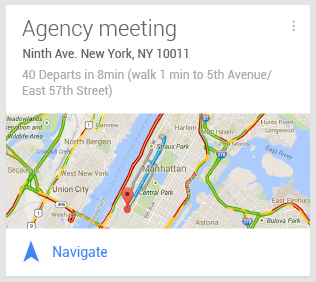Gilt
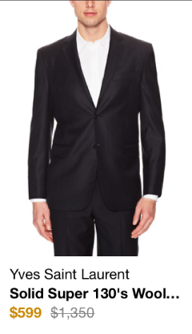3 characteristics of
card ui:
Embeddable/shareable
Easily Readable Content
Easy to modify and move around
Card UI isn't really new
and it's not a spec
it's a design pattern that encourages you to focus on the content that really matters to your users
added bonus is that it's standardizing how the front-end looks and feels
How can we better engineer the Card UI pattern?
The Future is Web Components.
Web Components enable Web application authors to define widgets with a level of visual richness and interactivity not possible with CSS alone, and ease of composition and reuse not possible with script libraries today
In the context of Card UI, imagine each "card" is represented by a DOM element.
Did I lose you?
Take this card, for example:
Web Components is a standard that would allow me to embed that "card" into my webapp with a DOM element like:
<x-gilt-product></x-gilt-product>
How?
Web Components
Templates
Decorators
Custom Elements
Shadow DOM
Templates are inert chunks of markup that can be activated for later use.
Decorators apply the templates.
Custom elements are defined by the engineer.
Shadow DOM encapsulates the DOM tree for more reliable composition of user interface elements.
DOM
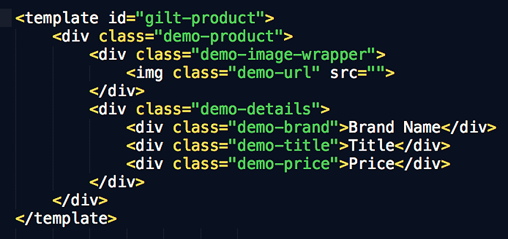JS
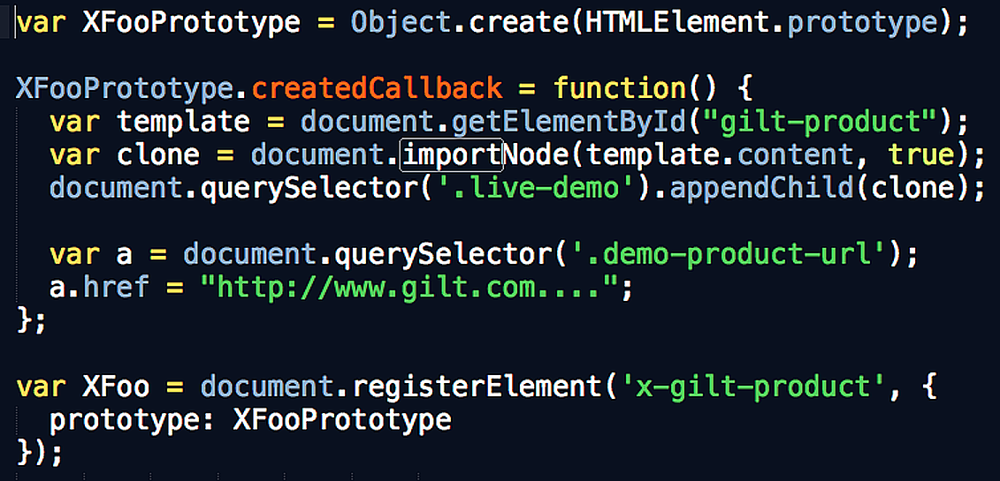Live Demo!
Some questions I have about Web Components:
What is the x- in x-gilt-product?
How do I pass values to a custom element?
How can I easily share a custom element?
Does this mark the end of Handlebars and other JS templating languages??
Wait! I couldn't see the demo!
Web Components aren't supported by default anywhere, except...
On Google Chrome Canary
Mozilla created X-Tag, a small JavaScript library that brings Web Components Custom Element capabilities to all modern browsers.
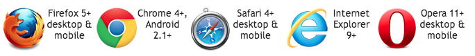http://x-tags.org/
X-Tags uses a polyfill library called Polymer.
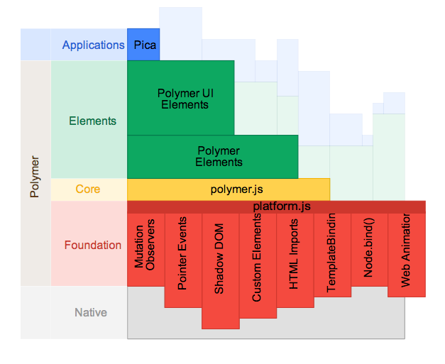https://github.com/Polymer/polymer
X-Tags example: Panel
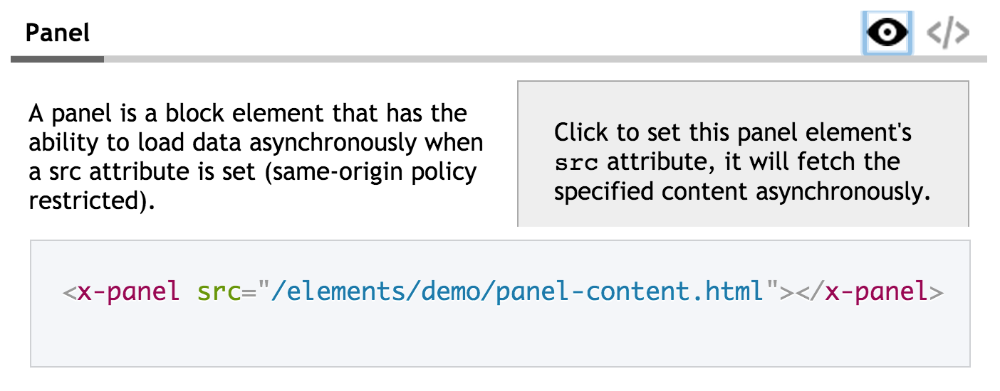http://x-tags.org/
X-Tags example: Map
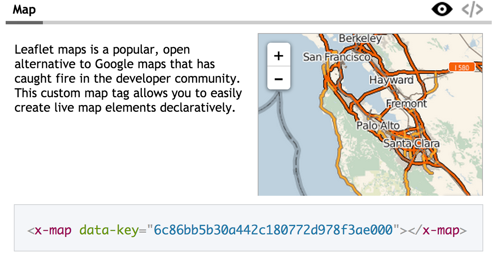http://x-tags.org/
http://customelements.io/
But, Web Components may change before Google releases it.
You just wasted my time!
Why should I care?
And how does this frame how I think about design and engineering the mobile web?
Web Components is trying to solve for the same problem that Card UI is trying to solve. Except, it is solving it from an engineering perspective in addition to design perspective.
Using Web Components will only encourage us to better think about the characteristics of Card UI.
- How do I make something simple to consume?
- How do I choose what to display?
- How can I share this with others?
It also means we can start to think about a responsive Card UI design pattern.
Instead of thinking about how to make a PAGE responsive, we can begin to think about how to make individual COMPONENTS responsive.
In the context of mobile, we want our mobile web experiences to show the minimum number of things to create the best user experience.
If we can represent this:
With this:
<x-gilt-product></x-gilt-product>
Then we can think about using this:
<x-gilt-navigation></x-gilt-navigation> <x-gilt-hero></x-gilt-hero> <x-gilt-sale> <x-gilt-product></x-gilt-product> <x-gilt-product></x-gilt-product> <x-gilt-product></x-gilt-product> </x-gilt-sale> <x-gilt-footer></x-gilt-footer>
To represent this:
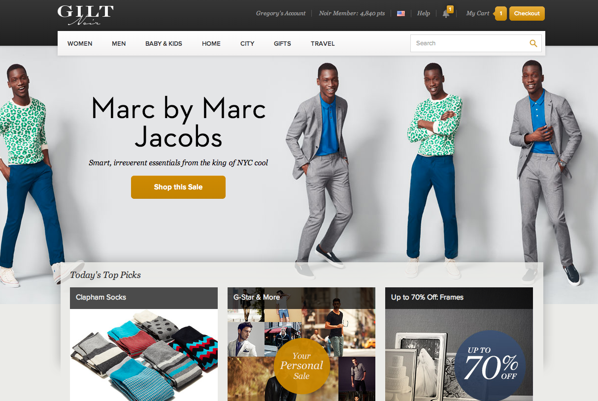Or this:
<x-gmw-navigation></x-gmw-navigation> <x-gilt-sale> <x-gmw-product></x-gmw-product> <x-gmw-product></x-gmw-product> <x-gmw-product></x-gmw-product> </x-gilt-sale> <x-gmw-footer></x-gmw-footer>
To represent this:
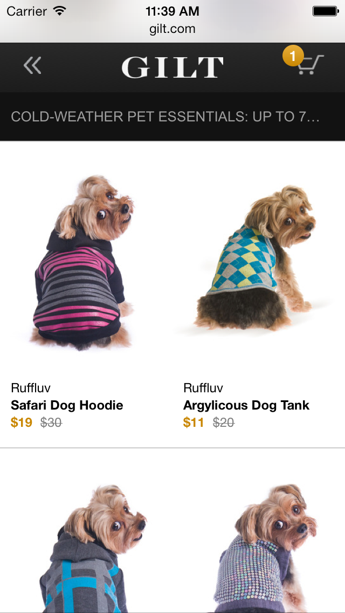where each Web Component is like an item in an apartment
you design the best individual pieces that you can
so that they are reusable, embeddable, and shareable
with the goal that your mobile web user experiences start to look like this:
Small space, beautiful components.
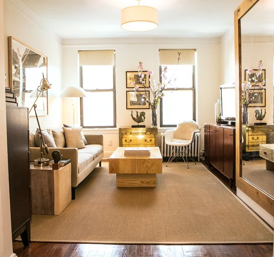In conclusion
Furnishing a studio apartment is to mobile web what furnishing a large apartment is to the desktop experience.
Card UI is a design pattern to get you to think quick and simple.
And, Web Components will allow you to easily package "cards" in the future.
Thanks!
- gmazurek@gilt.com
- gregorymazurek.com
- download these slides on Github: GregM
- @gregorymazurek